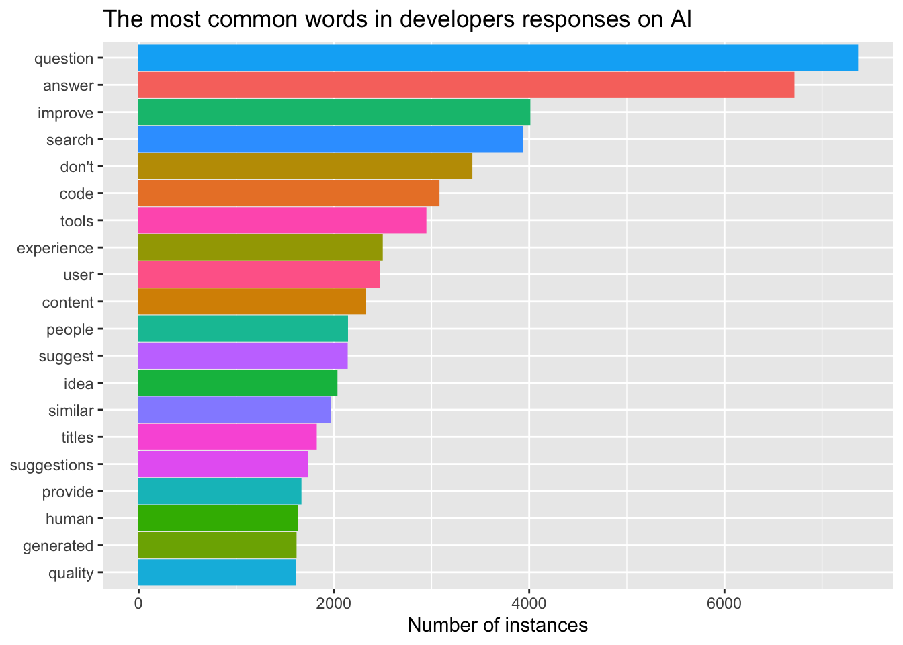
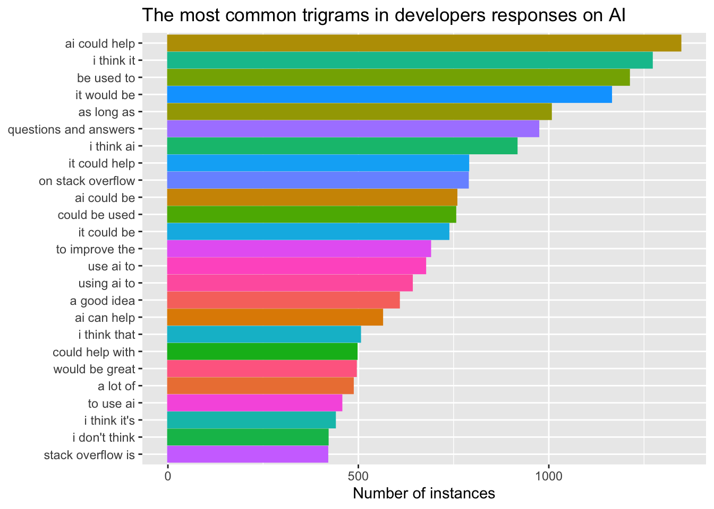
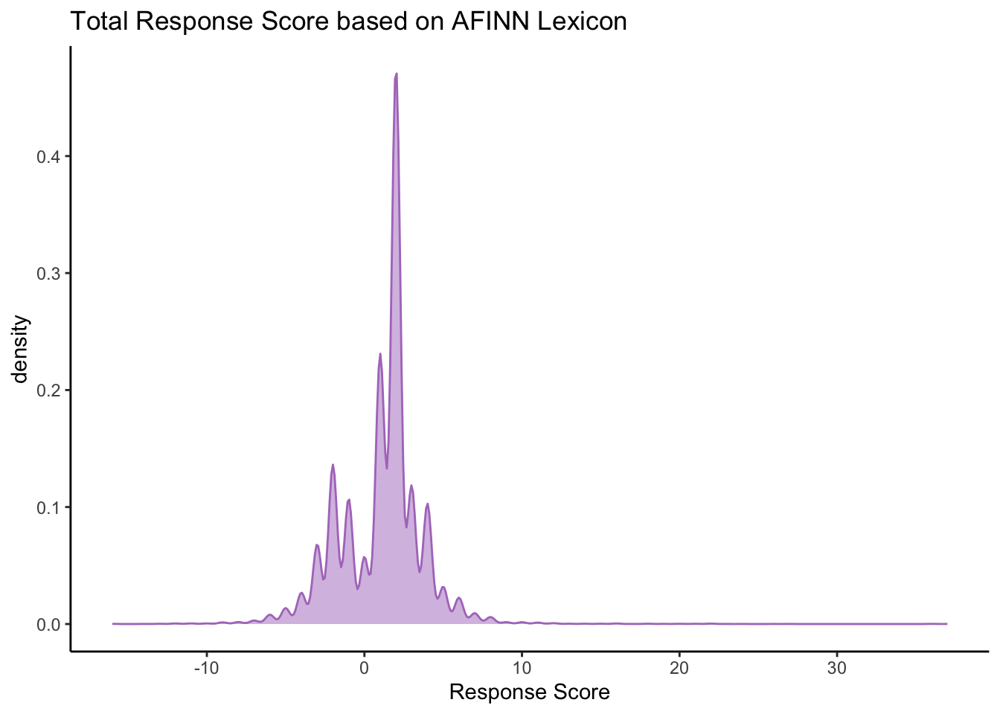

Exploring Artificial Intelligence and Programming: A Comprehensive Analysis of Developer Perspectives
Introduction
In the world of coding, things are shaking up with the rise of artificial intelligence (AI) tools. From those just getting the hang of coding to the pros handling big projects, everyone’s got a different take on AI. In this blog project, we’re digging into the real thoughts of programmers at different career stages. We look into their honest insights about how AI tools are fitting into their coding lives.
As we delve deeper into the dynamic intersection of artificial intelligence and programming, it becomes evident that developers across various career stages are navigating a landscape that continually evolves. From the novice coders navigating their initial lines of code to seasoned professionals orchestrating complex projects, the integration of AI tools is reshaping the very essence of their work. This blog project aims to capture the nuanced perspectives of these developers, shedding light on the multifaceted ways in which AI is influencing their coding practices. Whether it’s streamlining repetitive tasks, unlocking new possibilities, or presenting unforeseen challenges, each coder brings a unique story to the table, contributing to the broader narrative of AI’s impact on the programming realm.
How Developers Describe AI Tools


Overall Developer Sentiments

Examples and additional guidance are provided below.
Take note of the the default code chunk options in the setup code chunk. For example, unlike the rest of the qmd files we worked in this semester, the default code chunk option is echo = FALSE, so you will need to set echo = TRUE for any code chunks you would like to display in the blog. You should be thoughtful and intentional about the code you choose to display.
Links
You can include links using Markdown syntax as shown.
You should include links to relevant sites as you write. You should additionally include a list of references as the end of your blog with full citations (and relevant links).